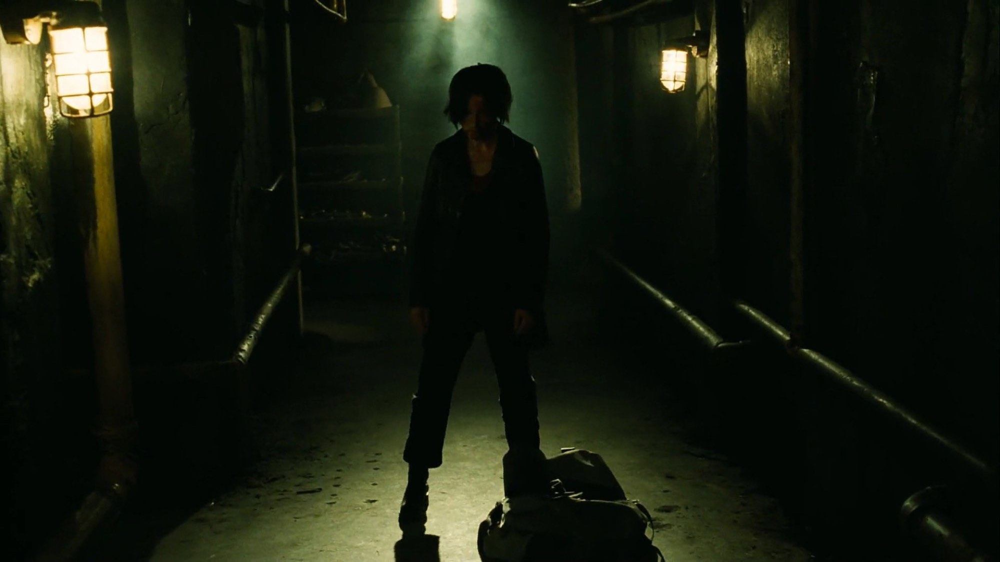
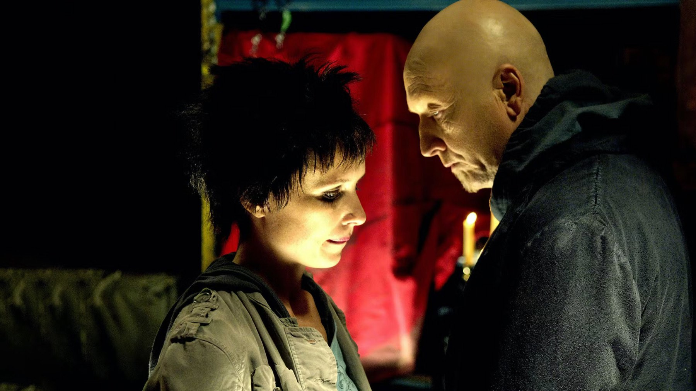

Saw III compie 20 anni: 6 curiosità sul film
Un pranzo dopo un lutto, larve fissate con il miele, sette tagli per evitare il divieto e un esordio che a Halloween nessuno aveva mai visto
Il 4 dicembre 2005 arrivò la notizia della morte del produttore Gregg Hoffman. Quel giorno il regista Darren Lynn Bousman, James Wan e Leigh Whannell si trovarono a pranzo e decisero di fare un terzo capitolo in suo onore. Vent'anni dopo Saw III è ancora il titolo che molti associano alla notte di Halloween, nonostante la critica lo abbia accolto male e la violenza resti difficile da digerire. Ecco sei cose sul suo dietro le quinte che aiutano a capire perché, senza svelare nulla della trama.
Come nacque il terzo film?
Da un lutto più che da un piano industriale. Hoffman era stato uno dei produttori che avevano creduto nella serie fin dall'inizio, e il film porta la sua dedica. Whannell, che firmò la sceneggiatura sulla base di una storia scritta insieme a Wan, lo descrisse come una storia d'amore tra padre e figlia, quella tra John Kramer, il «Jigsaw» di Tobin Bell, e Amanda Young, interpretata da Shawnee Smith. È un'indicazione utile per chi lo rivede: sotto le trappole il film parla soprattutto di un rapporto, e lo fa con la serietà di chi ha appena perso un collega.
Quanto costò e quanto ci misero a girarlo?
Il budget fu di 10 milioni di dollari, contro i 4 di Saw II e il milione circa del primo film del 2004, girato in appena 18 giorni. Per Saw III le riprese durarono 27 giorni, dall'8 maggio a fine giugno 2006, al Cinespace Film Studios di Toronto, con una fotografia di David A. Armstrong e il montaggio di Kevin Greutert. È una cifra ancora piccola per un film che sarebbe arrivato a 164,8 milioni di incasso mondiale, secondo Box Office Mojo, e spiega perché la serie fosse diventata una macchina da profitti così regolare: ogni capitolo costava poco e usciva sempre nello stesso periodo.

Cosa c'era davvero dentro la vasca dei maiali?
Meno di quanto sembri, ma con un dettaglio che nessuno vorrebbe conoscere. La scena della vasca fu costruita con schiuma, gomma e lattice, a cui furono aggiunte larve vere, disinfettate e fissate con il miele. Anche le altre trappole cambiarono strada prima di arrivare sullo schermo: quella chiamata Rack nacque come una scatola che si richiude e diventò un congegno che torce il corpo, mentre quella della sala frigorifera richiese un calco del corpo dell'attore, con i limiti di sicurezza che imponevano di non coprirlo del tutto. È il lavoro artigianale che il film mostra meglio, e che i capitoli successivi, con più soldi e più effetti digitali, hanno quasi sempre perso.
Perché rischiò il divieto?
Per sette tagli. Per ottenere il rating R la MPAA chiese di ridurre alcune scene, e il suo interesse si concentrò più sulla tortura emotiva che sulla violenza grafica. In Giappone il film ebbe un R18+, contro l'R15+ dei precedenti. Nel 2007 arrivò anche un'edizione estesa di 120 minuti, in home video dal 23 ottobre, contro i 108 minuti delle sale. Chi lo rivede oggi dovrebbe sapere che la violenza resta molto esplicita: lo diciamo senza fare la morale, ma lo sconsigliamo a chi si impressiona facilmente.
Fu davvero un successo?
Al botteghino sì. Esordì il 27 ottobre 2006 con 33.610.391 dollari in 3.167 sale, il miglior esordio mai visto nel weekend di Halloween, e chiuse con 80,2 milioni negli Stati Uniti e 84,6 nel resto del mondo. Ma i critici non lo videro in anteprima, e il voto fu quello che ci si aspetta: 28% su Rotten Tomatoes, con 92 recensioni, e 48 su 100 su Metacritic. Il pubblico fu meno severo e gli diede una B su CinemaScore. Se ti è piaciuta la nostra curiosità su Babel, uscito in Italia nello stesso mese del 2006, noterai quanto l'autunno del 2006 fosse affollato di film molto diversi tra loro, da The Departed a questo.
E Tobin Bell, da dove arrivava?
Da molto lontano. Nato nel 1942, prima di Saw aveva fatto la comparsa in oltre 30 film, tra cui Manhattan di Woody Allen, e aveva debuttato con una parte vera in Mississippi Burning nel 1988. Il ruolo di John Kramer lo rese riconoscibile in tutto il mondo e gli valse candidature ai MTV Movie Awards come miglior cattivo nel 2006 e nel 2007; per Saw III perse contro Jack Nicholson. Per noi è il motivo migliore per rivedere il film anche se non ami il genere: la sua interpretazione si regge su una voce bassa e su gesti piccoli, il contrario di quello che ci si aspetterebbe da un horror di questo tipo.
Vale la pena rivederlo oggi?
Dipende da cosa cerchi. Come film perfetto, no: la costruzione a incastro regge meno di quanto prometta, e lo stesso Bousman ammise che la maggior parte del pubblico avrebbe capito il finale nei primi 15 minuti. Come rito di Halloween, invece, funziona ancora, e noi lo consigliamo a chi ha già visto i primi due capitoli e vuole capire come la serie sia diventata un fenomeno. In Italia uscì il 9 marzo 2007; a ottobre 2026 è su Lionsgate+ (Amazon Channel) e a noleggio su Apple TV e Amazon Video. Se cerchi altri horror da guardare in questi giorni, vedi anche la nostra curiosità su Resident Evil.
Domande frequenti
Quando è uscito Saw III in Italia?
Il 9 marzo 2007 nei cinema. Negli Stati Uniti era uscito il 27 ottobre 2006.
Quanto ha incassato Saw III?
164,8 milioni di dollari nel mondo, di cui 80,2 negli Stati Uniti, a fronte di un budget di 10 milioni (Box Office Mojo).
Dove si può vedere Saw III oggi?
A ottobre 2026 risulta su Lionsgate+ (Amazon Channel) e a noleggio su Apple TV e Amazon Video.